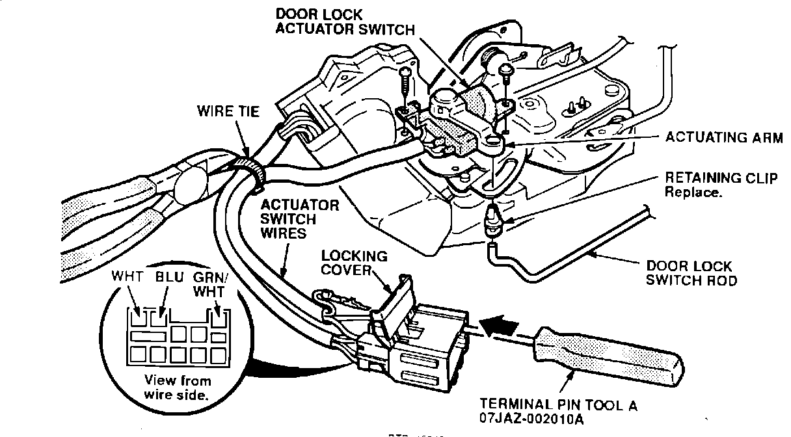

Security System - Opening Front Door Sets Off Alarm
BULLETIN NO.93-001
VIN APPLICATION
Thru
JH4CC2...PC008570
MODEL
VIGOR
YEAR
1992-93
March 9, 1993
Vigor:
Unlocking and Opening the Door Sets Off the Security Alarm
SYMPTOM
Unlocking either front door and then opening it sets off the security alarm.
PROBABLE CAUSE
The door lock actuator switch becomes oxidized. The oxidation blocks the "unlocked door" signal to the security system control unit.
CORRECTIVE ACTION
Replace the door lock actuator switch with the parts listed under PARTS INFORMATION.
1. Remove the affected door latch from the door.

2. Release the locking cover from the connector shell. Insert the special tool into the connector as shown. Lift up on the wire terminal locking tabs to remove the three actuator switch wires from the connector.
3. Remove the door lock switch rod from the retaining clip; then remove and discard the retaining clip from the actuating arm. Cut the wire tie, and remove the two mounting screws. Remove the old door actuator lock switch from the door latch.
4. Install the new door lock actuator switch on the door latch. Use a new retaining clip when installing the door lock switch rod. Place a new wire tie around the two harnesses, and insert the wire terminals into the connector. Reinstall the locking cover.
5. Reinstall the door latch assembly. Temporarily install the door panel, and connect the connectors. Test the door latch, door lock switch, and security system for proper operation.
6. If OK, install the door panel.
PARTS INFORMATION
Left Door Lock Actuator Switch: P/N 72165-SL5-A01
Right Door Lock Actuator Switch: P/N 72125-SL5-A01
Holder/Retaining Clip: P/N 72137-SS0-003
WARRANTY CLAIM INFORMATION
In warranty:
The normal warranty applies.
Out of warranty:
Any repair performed after warranty expiration may be eligible for goodwill consideration by the District Service Manager. You must request consideration, and get the DSM's decision, before starting work.
Operation number:
748150 - Left Front
749150 - Right Front
Flat rate time:
0.8 hour per door
Failed P/N:
72165-SL5-A01
Defect code:
032
Contention code:
B01